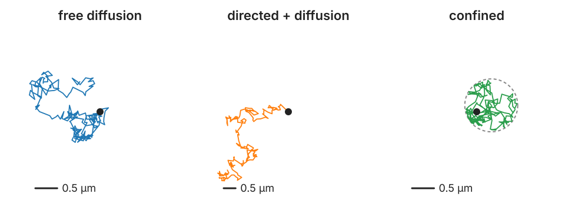

The mean squared displacement (MSD): free diffusion, directed motion, confinement, anomalous diffusion.
Reading an MSD honestly: fit range, localisation error, short tracks.
Biases from tracking itself; ensemble against single tracks.
Migrating cells: the persistent random walk.
Slides titled The math give the formulas and proofs; the ideas are complete without them.
Per-track numbers

Duration, net displacement (first to last point), path length (sum of steps).
Mean speed = path length / duration. Straightness = net displacement / path length: 1 for a straight line, near 0 for a random walk.
Turning angles between consecutive steps: near 0 for directed motion, spread out for random motion.
The three tracks above (simulated, same D) look different, and the numbers say so. But some of the numbers depend on how the movie was taken.
The speed trap
For random motion, the “speed” measured from consecutive frames depends on the frame interval:
D = 0.1 µm²/s measured every \Delta t = 0.1 s: about 1.8 µm/s.
The same particle every \Delta t = 0.01 s: about 5.6 µm/s.
The displacement grows only as \sqrt{\Delta t}, so displacement / Δt grows as 1/\sqrt{\Delta t}. Random motion has no speed; report the diffusion coefficient instead. Localisation noise adds apparent speed and lowers straightness as well: noise makes every step a little longer.
The math: the speed of a random walk
A 2D random-walk step over \Delta t has independent Gaussian components with variance s^2 = 2D\Delta t each. Its length r is Rayleigh distributed:
So the apparent speed is E[r]/\Delta t = \sqrt{\pi D/\Delta t}: \sqrt{\pi \cdot 0.1/0.1} = 1.77 µm/s and \sqrt{\pi \cdot 0.1/0.01} = 5.60 µm/s. With localisation error σ per axis, the variance per axis becomes 2D\Delta t + 2\sigma^2 and the apparent speed \sqrt{\pi(D\Delta t + \sigma^2)}/\Delta t, which blows up for small Δt.
The mean squared displacement
For every lag τ (a number of frames apart), average the squared displacement over all pairs of points that far apart:
\text{MSD}(\tau) = \text{mean over } t \text{ of } |\mathbf r(t + \tau) - \mathbf r(t)|^2.
Worked (1D track, positions 0, 1, 3, 2, 4):
lag
differences
MSD
pairs
1
1, 2, −1, 2
(1 + 4 + 1 + 4)/4 = 2.5
4
2
3, 1, 1
11/3 = 3.67
3
3
2, 3
13/2 = 6.5
2
4
4
16
1
“Diffusion” in this unit means random motion of particles; the diffusion models of the deep learning day borrowed the name.
What the shape of the MSD says
Free diffusion: a straight line through 0. Slope 2dD (d = number of dimensions: 4D in 2D). On log–log axes, slope 1.
Directed motion (plus diffusion): curves upward; at long lags slope 2 on log–log axes; the velocity comes from the \tau^2 term.
Confined in a region: levels off at a plateau set by the size of the cage (R^2 for a disc of radius R).
Anomalous (crowded, obstacles, binding): a power law \tau^\alpha with \alpha < 1 (subdiffusion); \alpha > 1 is superdiffusion.
The math: MSD of a random walk, and more
\mathbf r(t) = \sum_k \Delta\mathbf r_k with independent steps of variance 2D\Delta t per axis. Over a lag of n frames (\tau = n\Delta t) the variances add:
\text{MSD}(\tau) = E|\mathbf r(t + \tau) - \mathbf r(t)|^2 = d \cdot n \cdot 2D\Delta t = 2dD\tau.
Directed + diffusion (velocity \mathbf v): $r = v+ $ noise, so \text{MSD} = 2dD\tau + v^2\tau^2 (the cross term has mean 0).
Localisation error σ per axis (static): each position has its own error, so \text{MSD} = 2dD\tau + 2d\sigma^2 (in 2D: +4\sigma^2). Motion blur during the exposure subtracts a term \propto D\,t_\text{exposure}.
Confined, uniform in a disc of radius R, long lags: positions independent, E|X - Y|^2 = 2E|X|^2 = 2 \cdot R^2/2 = R^2.
Anomalous: \text{MSD} \propto \tau^\alpha; α = slope on log–log axes.
Try it: the MSD
Reading an MSD honestly
Long lags are noisy: at lag τ a track of N points has only N − τ (overlapping) pairs. Fit only the first part (e.g. the first quarter of the lags, or the first few for D).
Localisation error adds a constant offset4\sigma^2 in 2D: the line does not go through 0. With σ = 30 nm, D = 0.01 µm²/s, Δt = 0.05 s, the offset (0.0036 µm²) is larger than the lag-1 signal 4D\Delta t (0.0020 µm²). A line forced through the origin over lags 1–4 gives D = 0.016 instead of 0.010.
Short tracks give widely scattered D values: a histogram of per-track D is wide even for identical particles.
Gap-closed tracks have missing frames: compute lags from the times, not from the indices.
The math: why the tail is noisy
In a track of N points, lag n has N - n squared displacements, but they overlap (share steps), so they are far from independent.
The relative standard error of the time-averaged MSD grows roughly as \sqrt{n/N} for n \ll N (Qian, Sheetz and Elson, 1991): at n = N/4 it is about 50 %.
A per-track D from a line through the first four lags scatters by roughly 2/\sqrt{N} (more with localisation error): in the demo about 50 % for tracks of 20 points and 15 % for 200 points (Saxton, 1997, gives the full distribution).
Fitting MSD vs τ by ordinary least squares ignores that the points are correlated: more lags do not mean more information. The optimal number of fitted lags depends on 4\sigma^2/(4D\Delta t) (Michalet, 2010): few lags when the motion dominates.
Biases from the tracking itself
Fast particles leave the field or the focal plane sooner: their tracks are short. Keeping only long tracks keeps the slow ones: D is under-estimated.
At high density, linking errors cut long jumps short: the tracker prefers short links, so true long steps are replaced by shorter wrong ones. D is under-estimated (recall the difficulty ratio of the first unit).
Missed detections handled without gap closing: tracks shatter into short pieces, with all the problems of short tracks.
Ensemble or single track?
Ensemble MSD: pool all pairs of all tracks at each lag. One smooth curve: the population average.
Single-track MSD: one curve per track, then the distribution of D (or α). Shows heterogeneity: two populations, or a fraction of stuck particles.
Different questions: “how fast do these particles move on average?” against “are there several kinds?”
A single track can switch between modes (waiting, diffusing, running): its MSD averages them. Segment the track first (for example with hidden-state models, one per mode).
Cells: the persistent random walk
Migrating cells keep their direction for a while, then turn: persistent motion.
On short times: almost straight, MSD ∝ τ² (slope 2 on log–log axes).
On long times: random, MSD ∝ τ (slope 1).
The persistence time P is where the slope changes from 2 to 1.
Report the speed (meaningful here, on times shorter than P) and the persistence time, not one “diffusion coefficient”.
The math: the persistent random walk
Speed s, direction diffusing so that the velocity correlation is \langle\mathbf v(t)\cdot\mathbf v(t')\rangle = s^2e^{-|t - t'|/P} (Fürth, 1920). Then
Random motion has no speed: the apparent speed grows as 1/\sqrt{\Delta t}. Report D.
MSD: straight line (slope 2dD) for free diffusion; upward curve for directed motion; plateau R^2 for confinement; \tau^\alpha for anomalous motion. Use log–log axes to read the exponent.
Fit the first lags; expect an offset4\sigma^2 from localisation error; short tracks scatter.
Tracking biases D: fast particles leave, dense linking cuts long jumps.
Cells: persistent random walk, slope 2 then 1, crossover at the persistence time.